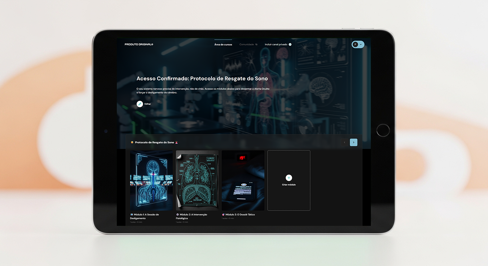

Por que apagar as luzes, proibir telas e tomar chás relaxantes está piorando sua insônia.
Seu diagnóstico revelou a causa da sua exaustão. Descubra como desativar o 'Alerta Oculto' da sua mente sem depender de químicas que fritam seu sistema nervoso.
Se você acorda todo dia com a sensação de ter sido atropelado por um caminhão, preste muita atenção nesta página.
Eu sei como você se sente ao deitar na cama. O corpo implora por descanso, os olhos ardem de pura exaustão, mas no exato segundo em que a sua cabeça encosta no travesseiro... seu cérebro liga em alerta máximo.
E você tem todo o direito de estar furioso. Você já tentou a famosa "higiene do sono". Já apagou a luz azul, tomou litros de chá de camomila, saiu das telas. E quando você diz a um médico que nada disso funciona, ele sugere apenas "fechar os olhos e tentar relaxar". Isso não é apenas inútil. É um insulto.
O Cativeiro Químico e a Mentira de "Apagar"
No desespero às 3h da manhã, muita gente recorre aos remédios pesados. Eles te prometem 8 horas de paz, mas o que entregam é um cativeiro químico.
Com o tempo, a dose aumenta, mas o cansaço nunca vai embora. Você se torna refém.
A Boa Notícia: Seu cérebro NÃO está quebrado
Você não perdeu a capacidade de dormir. O que acontece é que seu cérebro está tentando te superproteger. Devido ao estresse diário, ele ativou um sistema de alarme primitivo. Há um pico anômalo de cortisol e adrenalina no seu sangue à noite.
Para o seu cérebro, tentar dormir nesse estado é como tentar dormir no meio de uma selva com predadores. O seu colchão virou um gatilho de trauma e ansiedade de performance.
O Mecanismo Único: A Engenharia Respiratória
Já que as pílulas causam "ressaca zumbi" e tentar dormir só te deixa mais acordado, como quebrar essa corrente?
A neurociência descobriu que existe um "interruptor físico" no seu corpo: o seu Nervo Vago. E a única forma autônoma de acessá-lo conscientemente é através da Engenharia Respiratória.
Não estou falando de meditação mindfulness ou esoterismo. Estou falando de protocolos mecânicos de respiração que forçam clinicamente o seu ritmo cardíaco a cair, sinalizando para o seu cérebro límbico que o ambiente é seguro. Quando esse sinal é enviado, a "pressão de sono" natural derruba você em minutos.
O Resgate da sua Identidade (A Vida no "Modo OFF")
Imagine deitar na cama e, em poucos minutos, sentir seu corpo pesar e afundar no colchão, sem a tortura incontrolável de um cérebro hiperativo aprisionado em um corpo exausto.
Imagine acordar na manhã seguinte com uma energia genuína, recuperando a tolerância e a paciência para ser um parceiro atencioso e uma mãe/pai presente, eliminando as explosões de raiva incontroláveis. Quando você desativa o estado de alerta, você não apenas dorme; você resgata a sua capacidade de funcionar na sociedade e a sua própria identidade que a privação de sono roubou.
O Protocolo de Resgate Definitivo
Um arsenal prático para desarmar sua mente antes de deitar.

play_circle A Sessão "Modo OFF" (Vídeo Guiado)
Você não precisa pensar ou contar. Basta dar o play no escuro e seguir o movimento da tela. O ritmo visual reduzirá seu sistema nervoso simpático à força, induzindo o sono antes do vídeo acabar.
auto_stories Manual de Táticas Respiratórias
Aprenda a técnica Quadrada (Box Breathing) usada por militares sob estresse extremo, e a técnica 4-7-8 para apagar crises de ansiedade às 3h da manhã.
bed Destruindo o Efeito Nocebo
Liberte-se da "Ditadura das 8 Horas". O guia mostra como reprogramar a relação tóxica que você criou com a sua própria cama.
Quem já quebrou a "Corrente de ZZZs"
"Acordar parecendo um zumbi destruía meu dia no trabalho. A técnica ensinada aqui foi a única que parou aquela voz na minha cabeça que não calava a boca."
"Eu tinha pavor de ficar dependente de Zolpidem. O vídeo guiado virou meu remédio natural. Eu apago a luz, coloco o fone e simplesmente capoto em minutos."
"Estava com tanta irritabilidade pela exaustão que estava perdendo minha família. Voltar a dormir pesado me devolveu a vontade de viver."
Perguntas Frequentes
Já tentei luz azul, chás e "higiene do sono". Por que isso seria diferente? expand_more
Meu problema é acordar às 3h da manhã e não voltar a dormir. Isso me ajuda? expand_more
Vou precisar parar com meus remédios para dormir? expand_more
E se eu não conseguir dormir 8 horas exatas por causa do meu trabalho? expand_more
Isso é um aplicativo genérico ou tem cobrança mensal? expand_more
O Resgate da sua Identidade Custa Menos que um Café.
Você já gasta muito mais do que isso todo mês em energéticos para sobreviver ao dia, ou em consultas para buscar pílulas que te transformam em refém.
Risco Zero: 7 Dias de Garantia Incondicional
Nós somos tão contra promessas vazias que se você aplicar o método e sua mente não acalmar, devolvemos 100% dos seus R$ 34,49.